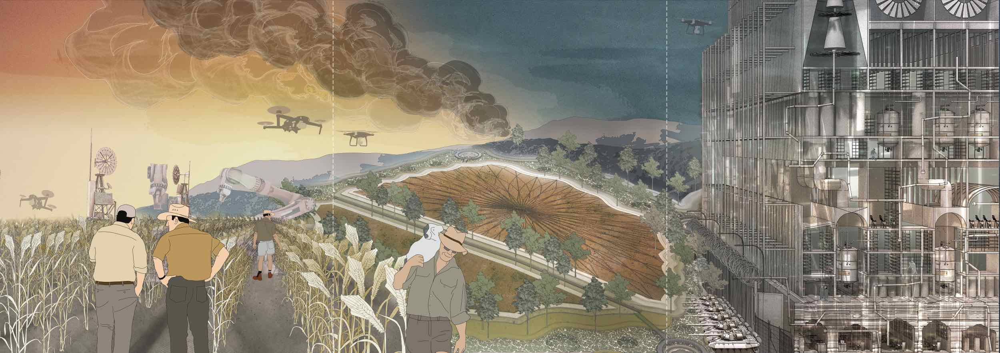

The Swards of Wrath
Year: 2022
Exhibition: Tallinn Architecture Biennale (Estonia)
Collaborators: Senior Lecturer David Mah & Yutong Jin
This large scale triptych displays future scenarios of Victoria’s agriculture industry. From robotic harvesting to leaky weir systems and militarised food production, the panel confronts the pressing issue of crop security in a climate crisis future of bushfire and drought.